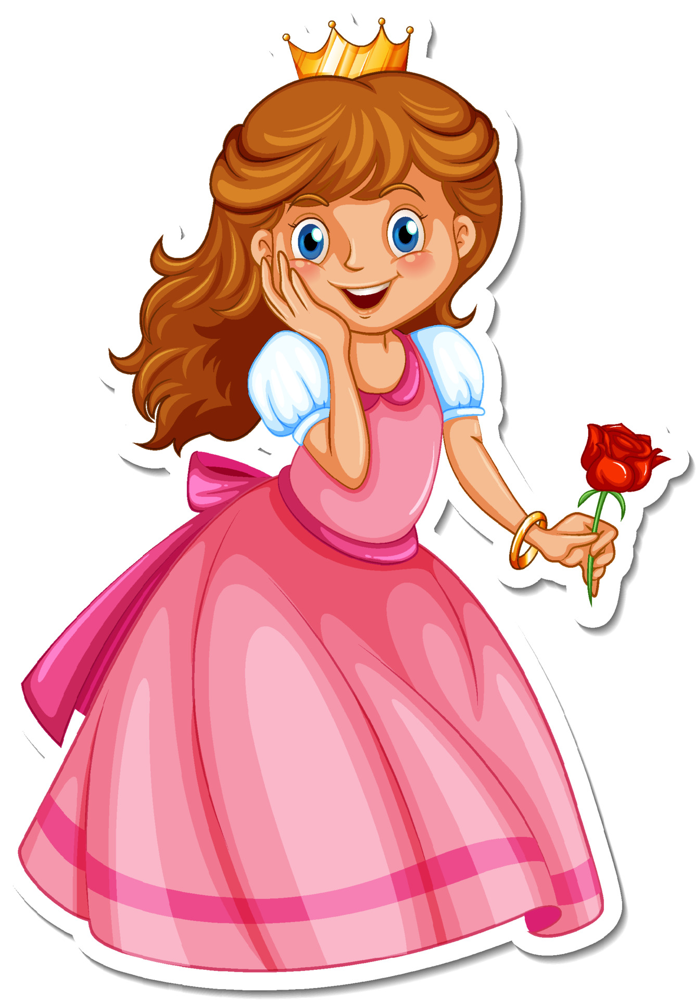

era uma vez uma princesa que gostava muito de passear mas nao sabia onde ir
ela vai para o jardim mas nao sabe oque fazer.
ela chega no bosque mas nao sabe o que fazer
ela comeca brincar no bosque e se diverte muito.

voce cansa e decidi voltar para casa
no bosque ela decidi
brincando mais um pouco ela decidi
procurando flores ela ve uma borboleta
ela vai atras da borboleta
ela vai atras dela e brinca com ela
ela vai atras de outro animal e ve uma raposa

voce fica muito feliz em brincar com ela,ela fez uma nova amizade
ela fica feliz e brinca com seu novo amigo